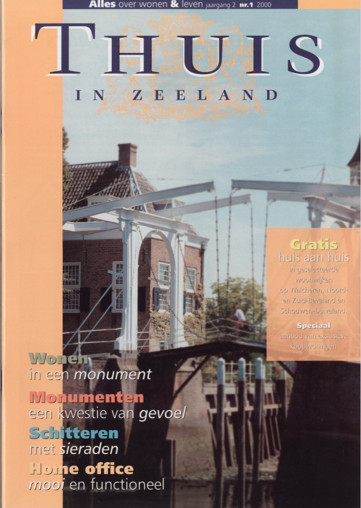
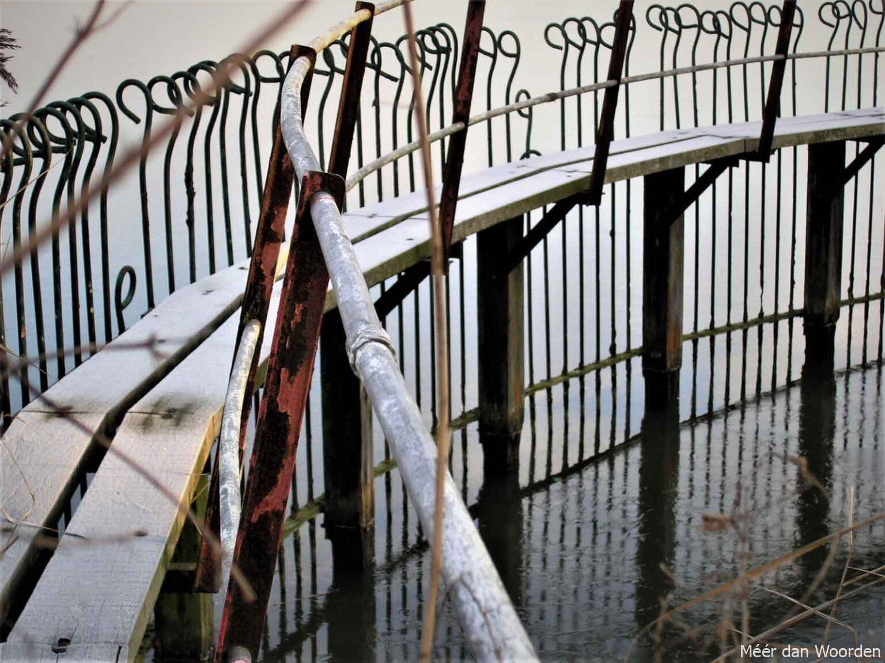
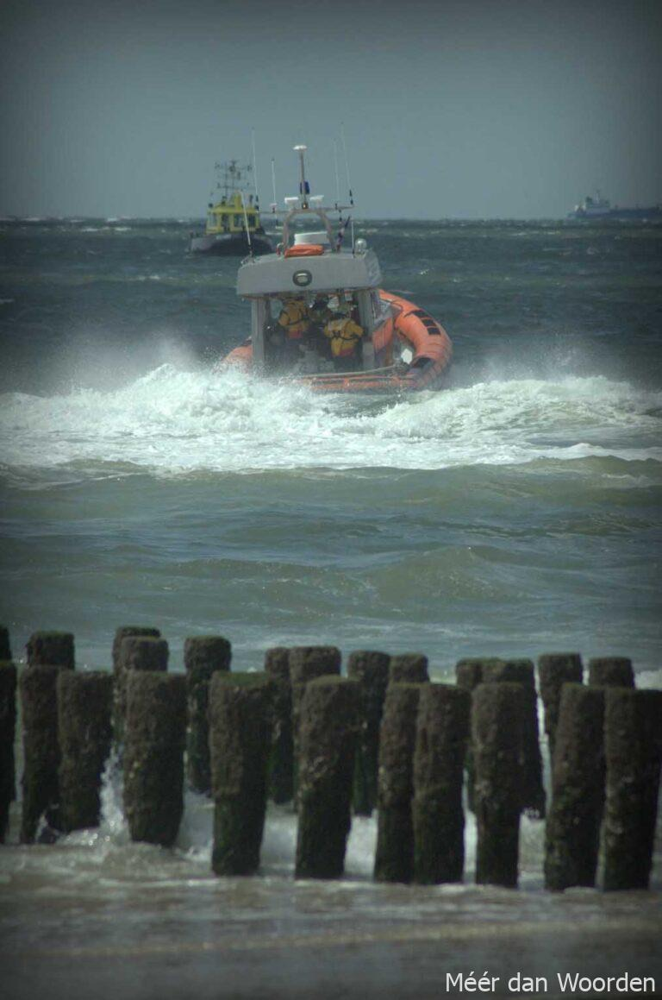

‘Je wordt een ander mens’

Bart Bouwmeester (53) en zijn vrouw Ineke Bouwmeester-Remijnse (52) wonen ‘op’ de Oranjeplaat in Arnemuiden. Pal aan het Veerse Meer met uitzicht op ‘De Lemmer-plaat’, een heus natuureiland. De Dom van Veere gloort aan de horizon. Staan bij landrotten fietsen voor de deur, hier liggen doodgewoon twee bootjes aan de steiger. Er bovenop eenden, aan het zonnen. Rondom veel groen, blauw en druk gekwetter van allerlei vogels. De dodaars, fuut, tureluur, aalscholver, velduil, zilverreiger en zelfs een koekoek. De vrouw des huizes houdt er een logboek van bij.
De familie Bouwmeester verkiest het platteland boven de stad. “Je voelt je hier echt onderdeel van de natuur en dat is een mens tenslotte ook”, aldus Bart Bouwmeester. Ineke: “Je ruikt de natuur hier nog, vooral ’s ochtends vroeg. Indrukwekkend is het trouwens ook om slecht weer te zien aankomen over het water.” Af en toe komt een bootje voorbij, evenals enkele ‘vogels’ van vliegveld Midden-Zeeland. “Als het niet te gek wordt en ze houden zich aan de vliegroute, dan stoort het ons niet”. De Bouwmeesters gunnen iedereen de natuur: “Niks afsluiten, we moeten er juist van kunnen genieten! Maar ik hoop wel dat ze niet alsmaar opgeofferd blijft worden aan onze commerciële drang tot cultiveren, want dan valt er straks niets meer te genieten!”
Ze houden beiden ook van zwemmen. Van juni tot en met september gaan ze bijna elke ochtend het water in: “Dan kunnen wij de drukte van de dag weer aan.” Beiden hebben een intensief bestaan en vinden dit een prachtige plek om alle drukte van zich af te gooien en te ontspannen. “Daar zijn we zuinig op”, benadrukt Ineke. Is de voorliefde voor Zeeland van Ineke te verklaren uit haar Zeeuwse roots, de liefde van Bart ontstond tijdens een werkweek van stadsjongens op een boerderij in Dreischor. Notabene na een jeugd in verre buitenlanden. Jaren later werd hij huisarts in Arnemuiden. “Een vakantie in Zweden in die tijd bracht ons op het idee, een zomerhuis aan het water. Het werd Oranjeplaat.”
Zes jaar geleden nam hij een baan aan buiten Zeeland en kwam verhuizen ter sprake. Hij: “We zouden toen tijdelijk in ons zomerhuis gaan wonen.” Maar tijdelijk werd permanent: “Ik rijd nog altijd op en neer. Hier thuiskomen vergoedt namelijk alles.” Zij vult aan: “En ook de kinderen waarderen deze plek enorm.” Het hele gezin is het er over eens: “Je wordt hier een ander mens.”
‘Een groot voorrecht’
Een weel is rond en herinnert aan een dijkdoorbraak. Zo ook de ‘Brilletjes’ bij Nisse, in de ‘Zak van Zuid-Beveland’. Tussen 1506 en 1554 brak de zeewerende dijk van de Kruiningen-polder verschillende keren door. De stroomgaten werden gedicht door de dijk er met een bocht voor langs te leggen. En midden in zo’n bocht aan de voet van de Brilletjesdijk woont nu de familie Melles. In ‘De Weeltjes’ een schilderachtig wit huis met zicht op de weel. Het doet bijna denken aan een vroeg schilderij van Mondriaan.

De familie Melles, Ruud (68) en Tineke (65), zijn geboren in Groningen-stad. Later, door studie en professie in Zuid-Holland terecht gekomen. Daar woonden zij aan de ‘Noord’, tussen Alblasserdam en Kinderdijk. Ruud Melles: “Ik heb eigenlijk altijd iets met water gehad. Pas toen de dokter ons schone lucht adviseerde, de kinderen hadden alledrie last van luchtwegaandoeningen, kwamen we op het idee van Zeeland.”
Maar de kust bleek erg duur. Toen, heel toevallig, bood een kennis van zijn vrouw de oplossing: ‘De Weeltjes’. Aan het water, beschut gelegen, in een polder met mooie boom- en bloemdijken, grote tuin met veel oude fruitbomen en beesten. De kennis was alleen en vond het er te eenzaam. Voor de kinderen leek het ideaal, dus zo togen vader en moeder Melles ruim 20 jaar geleden naar Nisse. Melles peinzend: “Ja, dat is best moeilijk geweest, hier aansluiting vinden. Je blijft eigenlijk altijd een buitenstaander. En vooral de kinderen -toen net in de puberteit- hebben daar veel last van gehad.”
Ruud Melles heeft geen last van de eenzaamheid. Zelfs niet van de grauwe wintertijd: “Ik ben emotioneel heel erg met de natuur verbonden. Dat verklaart misschien ook wel mijn beroep, bioloog. Bovendien heb ik altijd veel te doen. Eén hectare tuin onderhouden! Met verschillende appel- en perenbomen, sommige zelfs meer dan 100 jaar oud. Het huis opknappen.” Hij houdt ook veel van lezen, muziek en studeren. Want na zijn pensionering is Ruud Melles nog steeds actief. Hij geeft nog regelmatig lezingen en is tevens lid van twee serviceclubs.
De winterweekends brengen Ruud en zijn vrouw vaak door in Leiden. Bij mooi weer is Zeeland favoriet. Dan komen er zelfs ook groepen uit de Leidense praktijk (psychotherapie) van Tineke logeren in ‘De Weeltjes’. Ruud Melles vol besef: “Die mensen zijn enorm onder de indruk van deze plek. Dan realiseren wij ons weer dat het een groot voorrecht is om hier te wonen!”
‘Water leeft altijd’
Matgeel, donkerblauw en grijswit. Dat zijn de kleuren op ons netvlies. Stil strand, woeste golven en onstuimige luchten. Dat zie je, nee, dat voel je. Echt Hollands weer aan de Vlissingse boulevard. Deinende schepen pal langs de kust, vogels op de thermiek. Aan de wijde horizon vaag Zeeuws-Vlaanderen, België en flarden van Walcheren. Het boeit, onophoudelijk, als een levend panorama. We zijn te gast bij de familie Oreel (81), negen hoog.

Toen hun huis in de polder te groot werd besloten ze te verhuizen. Een appartement dichtbij de stad, dat leek hen wel wat: “De boulevard kwam in beeld. Toen we gingen kijken was het in vijf minuten beslist!” Mevrouw Oreel moest wel wennen: “Altijd vrijheid en nu ineens met z’n allen in zo’n woontoren. Ik had liever de natuur om me heen!” Er vaart juist een marineschip voorbij als de heer Oreel vertelt dat de scheepvaart hem het meeste boeit. “Het beloodsen bijvoorbeeld. En als er wat gebeurt. Vastlopen op een zandbank of op het strand. Nee, niets ernstigs, want er zitten natuurlijk ook gastankers bij.” Dat weet hij als geen ander.
Op de vensterbank twee verrekijkers. “Het water leeft hier altijd”, verklaart de heer Oreel. Geboren in Middelburg, maar hij groeide op in Vlissingen. Daar verpandde hij zijn hart. Aan de haven, aan het water, aan de mensen … èn aan zijn echtgenote. Op 16-jarige leeftijd ging hij werken. Bij de Vlissingse haven, als telefonist: “Op mijn 65e ging ik er pas weer weg, als directeur. Als dat geen band schept met het water.”
Gemengde gevoelens hebben ze over de tochtgaten tussen de bebouwing. “De wind is daar zo sterk, we kunnen er amper tegenop.” Mevrouw Oreel: “Ik vind het trouwens ook jammer dat alle mooie oude panden weg zijn.” Verder voelen de Oreels zich in hun element. Hij enthousiast: “Elk moment van de dag is het hier mooi. Zelfs ’s nachts. In elk seizoen!” Na een lange hete zomer kan hij echt verlangen naar de woestheid van de herfst en de koelte van de winter. Zij is lyrisch over de zonsondergangen: “Dan tovert de hemel de mooiste tinten rood en turkoois. Telkens weer vind ik dat onvoorstelbaar indrukwekkend.”
Peinzend vervolgt mevrouw: “Maar … het allermooist vind ik het toch als het stormt.” En daar is haar man het helemaal mee eens. Al mist hij dan wel de zeehondjes en bruinvissen. “Ik hoop maar dat ze gauw weer terugkomen …”